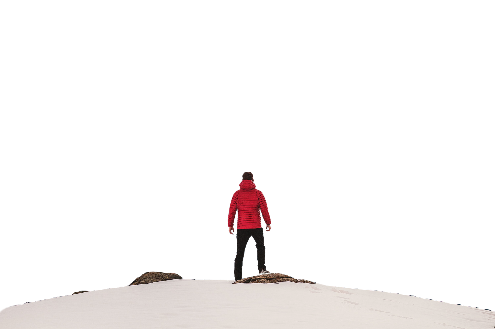
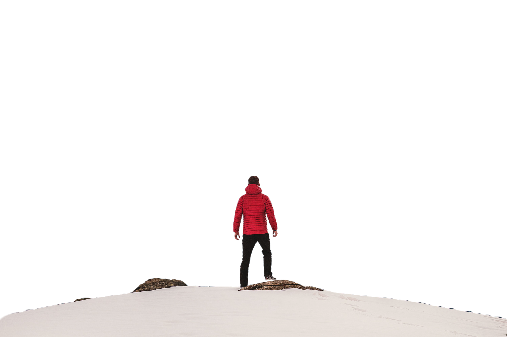

ADVENTURE
Adventure Time!
Adventure can be found anywhere, from the bustling city streets to the remote wilderness. It can be a
simple hike in the woods, a camping trip under the stars, or a journey to a far-off land. It can be a
physical challenge, a mental test, or an emotional roller coaster ride. But no matter what form it
takes, adventure is always a life-changing experience.
When we embark on an adventure, we leave behind the familiar and the mundane and step into the realm of
the unknown. We are forced to confront our fears, test our limits, and learn new things about ourselves.
BIKING
Biking is more than just a way to get around. It's an adventure waiting to happen. When you get on a
bike, you open yourself up to a world of new possibilities. You can explore new places, meet new people,
and challenge yourself in ways you never thought possible.
Biking can also be a great way to learn about different cultures and perspectives. When you travel by
bike, you have the opportunity to interact with locals and learn about their way of life.You also have
the chance to see the world from a different perspective, literally and figuratively.
HOT AIR BALLOON
Hot air ballooning is a unique and magical experience that allows you to float above the ground and see
the world from a bird's-eye view. It's a great way to explore new places and to experience the beauty of
nature in a whole new way.
Hot air balloons work by heating up air inside a large envelope, which causes it to rise. The balloon is
then attached to a basket, which holds the passengers and the pilot. As the balloon rises, the pilot
uses a burner to heat up the air inside the envelope to control the altitude of the balloon.
SURFING
Surfing is more than just a sport. It's an adventure. It's a way to connect with nature, to challenge
yourself, and to experience the thrill of riding a wave.
Surfers come from all walks of life, but they all share a love of the ocean and a passion for adventure.
Surfing can be enjoyed by people of all ages and skill levels, and it's a great way to get exercise and
to have fun.
Surfing is a great adventure for people of all ages and skill levels. It's a chance to connect with
nature, to challenge yourself, and to experience the thrill of riding a wave. So what are you waiting
for? Start planning your surfing adventure today!